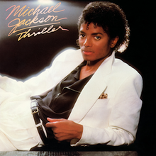
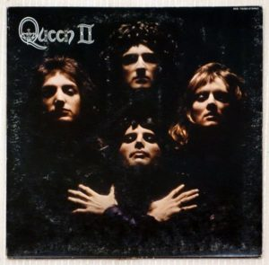

Adele
Adele 25
- "Hello" - 4:55
- "Send My Love" - 3:43
- "I Miss You" - 5:48
- "When We Were Young" - 4:51
- "Remedy" - 4:05
- "Water Under the Bridge" - 4:00
- "River Lea" - 3:45
- "Love in the Dark" - 4:46
- "Million Years Ago" - 3:47
- "All I Ask" - 4:32
- "Sweetest Devotion" - 4:12

Michael Jackson
Thriller
- "Wanna Be Startin' Somethin" - 6:02
- "Baby Be Mine" - 4:20
- "The Girl Is Mine" - 3:41
- "Thriller" - 5:57
- "Beat It"" - 4:18
- "Billie Jean" - 4:54
- "Human Nature" - 4:07
- "P.Y.T. (Pretty Young Thing)" - 3:58
- "The Lady in My Life" - 4:59

Queen
Queen 2
- "Procession" - 1:12
- "Father to Son" - 6:12
- "White Queen" - 4:34
- "Some Day One Day" - 4:23
- "The Loser in the End" - 4:02
- "Ogre Battle" - 4:10
- "The Fairy Feller's Master-Stroke" - 2:40
- "Nevermore" - 1:15
- "The March of the Black Queen" - 6:33
- "Funny How Love Is" - 2:50
- "Seven Seas of Rhye" - 2:50

Troye Sivan
Blue Neighbourhood
- "Wild" - 3:47
- "Fools" - 4:40
- "Ease" - 4:33
- "Talk Me Down" - 3:57
- "Cool" - 3:21
- "Heaven" - 4:21
- "Youth" - 3:05
- "Lost Boy" - 3:43
- "For Him" - 3:29
- "Suburbia" - 3:53
Blue Note
Mosauc
- "MosaicMosaic" - 8:13
- "Down Under" - 5:29
- "Children of the Night" - 8:51
- "Arabia" - 9:10
- "Crisis" - 8:33
Hans Zimmer
Gladiator
- "Progeny" – 2:13
- "The Wheat"– 1:03
- "The Battle"– 10:02
- "Earth"– 3:01
- "Sorrow"– 1:26
- "To Zucchabar"– 3:16
- "Patricide"– 4:08
- "The Emperor Is Dead"– 1:21
- "The Might of Rome"– 5:18
- "Strength and Honor"– 2:09
- "Reunion"– 1:14
- "Slaves to Rome"– 1:00
- "Barbarian Horde"– 10:33
- "Am I Not Merciful?"– 6:33
- "Elysium"– 2:41
- "Honor Him"– 1:19
- "Now We Are Free"– 4:14